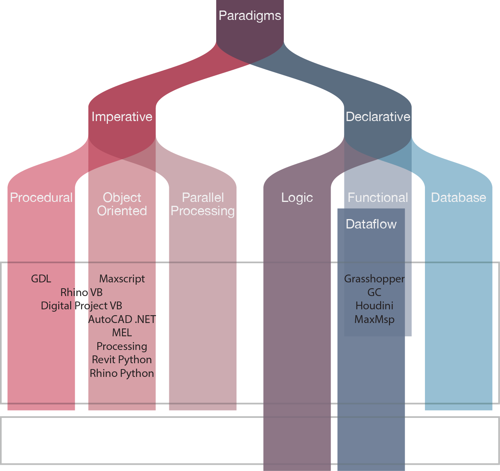
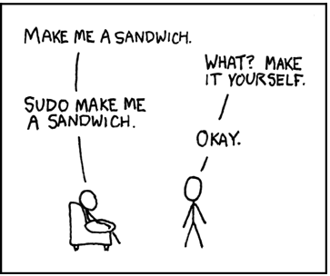

Introducción
Paradigma de programación:
Concepts, Techniques, and Models of Computer Programming.

Indica un método mediante el cual se deben resolver uno a varios problemas claramente delimitados.
Representa un enfoque particular o filosofía para diseñar soluciones.
Imperativo vs Declarativo:
Dentro de los paradigmas de programación existen 2 grandes grupos: que son los Declarativos y los Imperativos. Las características principales de ellos se ven en el siguiente gráfico.

Los desarrolladores web, pasan sus días dando instrucciones a las computadoras. Estas instrucciones generalmente implican algo de entrada (ej. una solicitud de una página web), algo de lógica (ej. obtener el contenido correcto de una base de datos) y algo de salida (ej. enviar el contenido al navegador solicitante). Este proceso de decir a un ordenador cómo realizar una tarea, es lo que comúnmente llamamos "programación", pero es sólo un subconjunto de programación: la programación imperativa.
Hay otro tipo de programación, la programación declarativa. Con la programación declarativa decimos a una computadora qué, no cómo realizar una tarea. Describimos el resultado que queremos y los detalles de cómo lograrlo se dejan al intérprete de lenguaje. Este cambio sutil en el enfoque de la programación tiene amplios efectos sobre la forma en la cual construimos software.
Los lenguajes declarativos tienden a desvanecerse en el fondo de la programación, en parte porque están más cerca de cómo interactuamos naturalmente con la gente. Si estás hablando con un amigo y quieres un sándwich, normalmente no le das a tu amigo instrucciones paso a paso sobre cómo preparar el sándwich. Si lo hiciera, se sentiría como la programación de su amigo. En cambio, es mucho más probable que hable sobre el resultado que desea, como "Por favor, hazme un sandwich" (o, tal vez, "Sudo hazme un sandwich"). Si su amigo está dispuesto y es capaz de seguir esta instrucción, entonces traducirán la frase "Hazme un sandwich" en una serie de pasos, como encontrar un pan, quitar dos rebanadas, aplicar coberturas, etc.
Historia
Uno de los precursores de la lógica matemática y, en consecuencia, de la programación lógica fue Aristóteles (384-322 a.C.) con su teoría silogística. Esta teoría estudia una clase particular de implicaciones con dos premisas y una conclusión. También fue tratada por los filósofos contemporáneos a Aristóteles y largamente estudiada en siglos posteriores, aunque no se produjeron innovaciones de interés hasta el siglo XVII con los trabajos de René Descartes y Gottfried Leibnitz.
Dos siglos después el matemático y lógico británico George Boole (1815-1864) dio un paso importante en el sistema de razonamiento aristotélico poniendo en relación la lógica y el álgebra. Los trabajos de Boole fueron modificados y ampliados mas tarde por otros matemáticos y lógicos como Jevon, Pierce, Schroeder y Huntington, entre otros.
Llegamos así a finales del siglo XIX y principios del XX con la revolución de la fundamentacion de las Matemáticas gracias a los trabajos de Frege, Cantor, Peano, Russell, Whitehead, entre otros, que marcan el periodo más apasionante y de mayor actividad en la historia de la lógica matemática.
En la mitad del siglo XX descubrimos que de forma paralela al desarrollo de la lógica se ha producido un espectacular avance de las llamadas “máquinas de calcular”, avance sobre el que reflexiona Alan Turing en un articulo titulado “¿Pueden pensar las máquinas?”, publicado en 1950 y que podemos dar como punto de partida de lo que después se llamará Inteligencia Artificial.

El primer momento en el que se usa la lógica matemática para representar y ejecutar programas es en 1930 cuando aparece como una caracteristica de los cálculos lamba desarrollados por Allonzo Church.
Sin embargo, la primera propuesta para usar la forma causal de la lógica para representar programas de cómputo fue propuesta por Cordell Green en 1969. Esto utilizó una axiomatización de un subconjunto de LISP (es una familia de lenguajes de programación de computadora de tipo multiparadigma con una larga historia y una sintaxis completamente entre paréntesis), junto con una representación de una relación de entrada-salida, para calcular la relación simulando la ejecución del programa en LISP.
Por otro lado, Fyster y Elcock's Absys emplearon una combinación de ecuaciones y cálculos lamba en un lenguaje de programación asercional que no impone restricciones en el orden en que se realizan las operaciones.
A principios de los 70's en la Universidad de Aix-Marseille I (Marsella, Francia) fue ideado un lenguaje de programación por los estudiantes Alain Colmerauer y Philippe Roussel. Éste nació de un proyecto que no tenía como objetivo la traducción de un lenguaje de programación, sino la clasificación algorítmica de lenguajes naturales. Alain Colmerauer y Robert Pasero trabajaban en la parte del procesado del lenguaje natural y Jean Trudel y Philippe Roussel en la parte de deducción e inferencia del sistema. Interesado por el método de resolución SL, Trudel persuadió a Robert Kowalski para que se uniera al proyecto, dando lugar a una versión preliminar del lenguaje Prolog a finales de 1971 y apareciendo la versión definitiva en 1972. Esta primera versión de Prolog fue programada en ALGOL W.
A Finales de los 70's Robert Kowalski crea el método de prueba por refutación que emplea el algoritmo de unificación como mecanismo de base y permite la extracción de respuestas SLD (Selective Linear Definite clause resolution).
Inicialmente se trataba de un lenguaje totalmente interpretado hasta que en 1983, David H.D. Warren desarrolló un compilador capaz de traducir Prolog en un conjunto de instrucciones de una máquina abstracta denominada Warren Abstract Machine, o abreviadamente, WAM. Desde entonces Prolog es un lenguaje semi-interpretado.